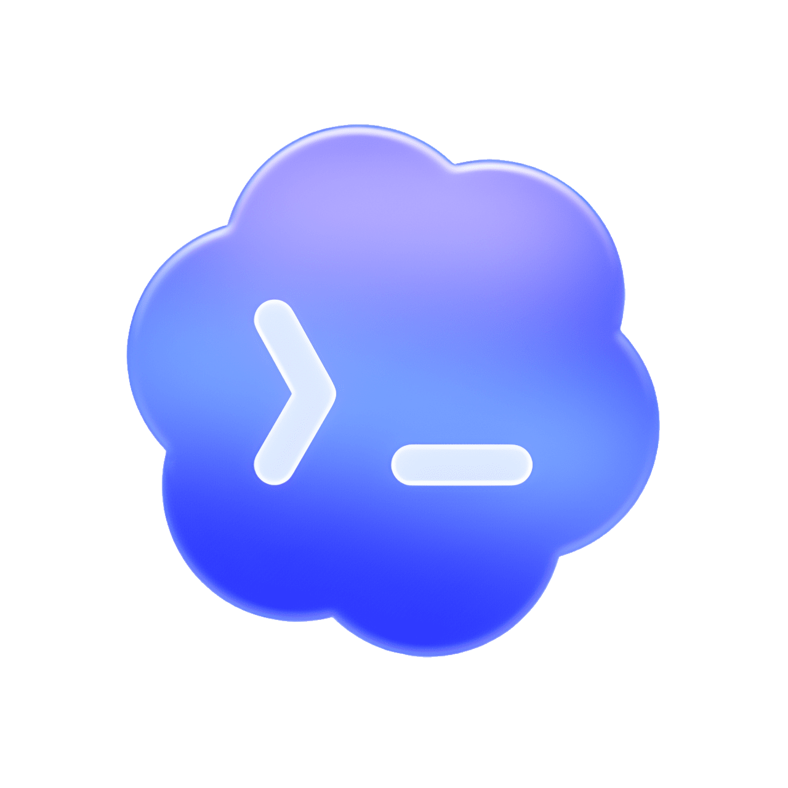
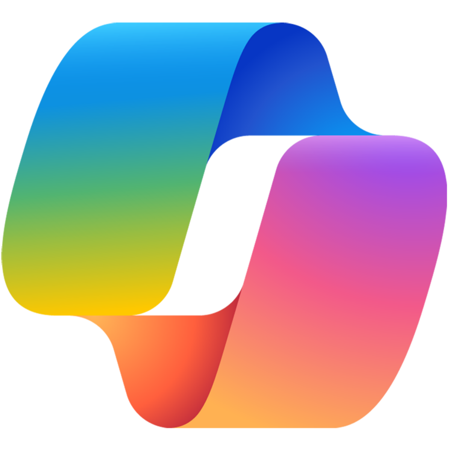

开箱即用、绝对安全的
本地 AI 桌面私人秘书
认识 bob agent —— 隐于系统托盘，随叫随到的极速 AI 助手。专为办公人群设计，零基础免配置即可上手。内置微信消息互通、跨端文件快传与本地私有知识库，断网依然可用。在大幅提升工作效率的同时，让所有核心数据 100% 锁在自己的电脑里。
10 大核心硬实力
抛弃快餐式的套壳网页与重型框架，我们只用极简、实用的日常功能雕琢真正融入你日常办公的生产力底座。
随叫随到，灵感即刻闪存
支持快捷键随时唤起屏幕边缘的轻量输入框。你可以随时把文件或截图分享给bob，就像发给老朋友一样简单、
聪明管家，帮你精打细算
bob 会根据任务难易自动指派模型。复杂的创作交由专家模型，后台琐事和记忆整理则交由低成本小模型运行，在陪伴你的同时帮你节省费用、
得力助手，帮你打理外部工具
bob 不仅能聊天，还能帮你调用各种工具。无论是搜索网页信息、抓取链接，还是运行脚本，他都能帮你自动化处理、
用心记住关于你的一切
每次交流后，bob 会在后台悄悄整理和提取你们谈话中的事实与偏好，沉淀为长期记忆。随着时间推移，他会越来越懂你、
在本地帮你理清思绪
把文件或随手记下的灵感交给他，bob 会在本地为你编织出一张脉络清晰的知识图谱，用可视化的连线帮你顺藤摸瓜找回记忆、
说到做到，把任务交给他很放心
开启Goal Mode，你可以放心把一个模糊的目标交给 bob。他会自己拆解步骤、调用工具，并在后台反复校对质量，直到交出满意的结果、
微信捎句话，他就帮你干活
出门在外？用微信和bob 捎句话，就能随时查询电脑上的日程、传输文件给电脑，或者把微信里的文章链接发给他来快速总结、
安全极传，数据绝不外速
手机和电脑互传大文件时，bob 会帮你建立安全的点对点通道。数据只在你的设备间传输，绝不经过任何云端服务器，极致安全、
遇到小问题，他会自我照顾
bob 拥有自检和自愈能力。如果网络出现波动、Key 失效或配置冲突，他会自己排查并尝试修复，不需要你费心维护、
贴心提醒，日程从不忘接
支持用大白话安排时间。bob 会在本地为你整理好周视图日程，并在会议或待办临近时，通过微信给你的手机发个贴心提醒、
为什么选择 bob？
用硬核的技术实力与清爽的无外部依赖，击碎繁琐的配置，真正无感陪伴。
安装包体积对比
常驻内存占用对比
和其他产品的不同
| 对比维度 |
|
Hermes Desktop | OpenClaw | Claude Code |
 |
 |
Tencent Workbuddy | Tencent Marvis | Trae | Manus (Cloud) |
|---|---|---|---|---|---|---|---|---|---|---|
| 上手门槛 | ||||||||||
| 轻便安装 | ||||||||||
| 支持本地模型 | ||||||||||
| 计费与成本 | ||||||||||
| 原生网页搜索 | ||||||||||
| 本地知识库 | ||||||||||
| 日常办公 | ||||||||||
| 沙盒开发与工程管理 | ||||||||||
| 安全与隐私确权 |
一、部署与运行：零依赖与无感常驻
许多宣称“支持本地运行”的 Agent，实质上是极客主导的工具，要求用户在安装前自行部署Node.js、Python 或CUDA 环境，甚至在初次启动时强行要求下载数 GB 的运行依赖与模型文件（例如Hermes Desktop 安装后会强制引导用户下载 2GB 左右的模型依赖方可启动）。而bob 运行在Tauri v2 与Rust，将核心与本地模型边车全部静态编译为单一的原生程序，包体约15MB，运行内存仅 30MB，实现真正的零依赖安装、无感常驻。
二、计费与使用：透明自主，拒绝点数陷阱
腾讯 Workbuddy 等企业级桌面工作台通常采取封闭的额度点数（Credits）划扣制或高昂的年费订阅。bob 坚持 Bring Your Own Key (BYOK) 的开放标准，不加收任何渠道点数差价。用户可自由配置 DeepSeek、Qwen、OpenAI 等任意服务商的原始Key，直接享受原厂的超低 Token 计费，甚至可以一键导入自己已有的本地模型，免除额度划扣焦虑。
三、安全与控制：不越权，让用户掌控最终决定
以Claude Computer Use 为代表的视觉 Agent，通过连续截屏并接管用户的物理鼠标键盘进行越权操控，在实际使用中极易因界面微小偏移而执行错误指令，更常引起用户对文件安全的恐慌。bob 绝不劫持键鼠，而是通过 Outbox 可视化拦截沙盒来限制文件写入，并通过系统剪贴板进行HTML/RTF 富文本草稿交接。人类审查并按下最后的“发送”键，这是效率与安全的完美平衡。
四、本地办公特化：开箱即用的白领日常技能
Claude Code、Codex 或Copilot 是专为程序员编写代码而生的IDE 插件或终端黑窗口；而bob 开箱即自带了专为泛白领办公定制的实用工具链。它支持用大白话安排日程并生或WeekTimeline 提醒，支持利用手机微信扫码直连，在外用微信即可给电脑发链接抓取或传送文档，并在局域网内提供零知识端到端加密的大文件极速共享（Web Drop）。所有的日常法门，bob 都已为您封装完毕。
五、Agent 技术路线：拒绝接管系统与盲目云端黑盒
近期如腾讯 Marvis 试图直接获取最高权限操控物理系统，这在带来遍历文件便利的同时，也带来了无法估量的本地安全隐患；而 Manus 则走向另一个极端，将所有任务（爬虫、执行代码）抛在极不可控的云端异步沙盒中，导致纠错成本极高。bob 始终坚守“人机共驾”边界，只做你桌面上的数字大脑，绝不越权替你点击，绝不擅自让数据离开本地设备。人类指挥，bob 提供决策，安全与高效完美统一。
极致高效的
运行底座
抛弃臃肿的传统后台与网络依赖，我们在本地搭建了一套极致快速、低功耗且完全加密的数据运行底座，只为保障你日常办公的流畅与隐私安全。
执行高效，体积轻便
使用系统级原生底层重构，彻底舍弃传统软件的臃肿与内存负担，仅占用约50MB 内存。运行时极速响应，操作丝滑不卡顿。
界面简洁，视觉清晰
前台界面设计遵循克制、高级的极简主义美学。数据响应灵敏，排版清晰舒适，支持一键切换明暗主题，长时间使用不易疲劳。
本地存储，高效检索
不依赖任何云端数据库，你的所有笔记、日程与思维导图关系均在本地加密存储。支持毫秒级全文检索，帮你顺藤摸瓜瞬间找回所有记忆。
安全可靠，加密传输
在手机、电脑与平板等多设备间极速互传大文件时，建立点对点直连通道。数据完全在本地设备间流转，不经过云端服务器，极致安全。
新增功能
我们正在按计划一步一步夯实本地桌面的 AI 体验，构建更加互联的个人助理节点。
完成了从早期概念验证 (PoC) 到极简本地核心底座的全部构建与试错迭代。
- 底层 Tauri V2 框架深度整合与跨平台编译适配
- 基于 Rust 的高性能、零依赖本地模型边车引擎研发
- Outbox 拦截沙盒机制与安全隔离网关上线
- ... 等上百项底层核心能力与体验打磨
打通了 SQLite 原生图谱画布，Vis.js 前端渲染上线；完成了 Soul-Session-Wiki 三层记忆漏斗台Clerk 模型后台静默 Dream 自谐调机制。
- SQLite 存储引擎与别名合并功能(`kg_merge_nodes`)
- 梦境引擎 24 小时 facts 清理与`SOUL.md` 重写更新
- 脑图搜索组件与BFS 跳跃关系游历组件
- [基建完毕] Telegram / Discord Bot 底层通信与事件分发框架
专注于在本地生成专业级别、自带优美排版的报表与报告文件，实现与企业级办公流的无缝连接。
- Tier 1 (PDF): 支持基于静态模板渲染富媒体 PDF 报告。
- Tier 2 (XLSX): 本地生成 Excel 数据报表与透视表。
- Tier 3 (DOCX): 自动把Wiki 整理为带标准目录大纲的Word 报告。
- Tier 4 (PPTX): 基于大纲 of PPT 幻灯片自动渲染与样式配置。
基于已搭建完成的通信底座，继续向外扩展 Bob 的接入渠道，让处于任意终端的你均能安全、即时地远程唤醒位于本地的 AI 大脑。
- 开发基于 Bot 的全功能远程命令通道与群组协同调用逻辑
- 优化跨地域 WebRTC 穿透成功率与信令转发延迟
打通多来源文件、第三方平台数据的知识汇聚，让本地智能大脑实现基于 Source-Hub 的结构化信息溯源与全景管理。
- Source-Hub 架构: 聚合 Web、微信、Discord 等多渠道信息自动归类为 Hub 节点。
- 批量注册与消歧: 高效处理异构数据入库，知识图谱智能关联去重。
- 内置内网穿墙隧道: 一键开启反向代理隧道，让外部服务也能畅通无阻地推送数据到本地大脑。